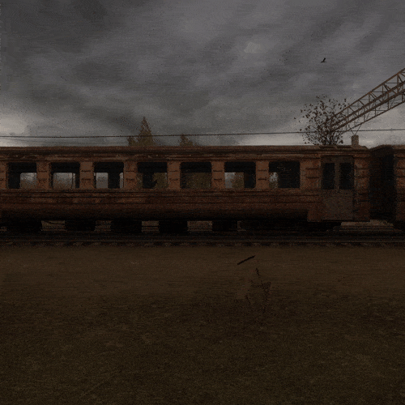
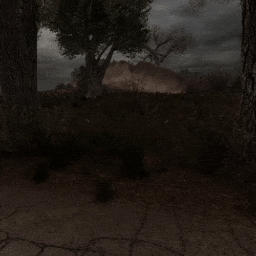
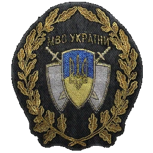
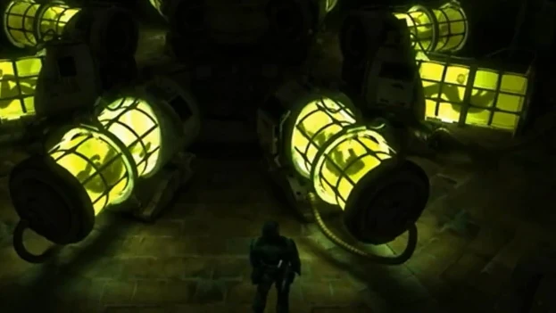

Справка
Тушкан
Опис
Тушкан - маленька щуроподібна істота, що пересуваються на двох лапах. Мешкають в основному в підвалах і підземеллях, на поверхню вибираються рідко.
По тушканах дуже важко вести прицільну стрілянину, і це їхня головна перевага. Проти них можна використовувати гранати, але робити це бажано до того, як мутанти скоротять дистанцію. У боротьбі з ними автомат малоефективний через свою високу купчастість, тому оптимальний варіант у боротьбі з тушканами - дробовик.
Сліпий пес
Опис
Сліпий пес - найзвичніший представник фауни Зони. Зграї цих собак можна зустріти скрізь, крім зовсім згубних місць.
Сліпі пси - одні з найслабших мутантів Зони. Тим не менш, велика зграя може становити небезпеку. Основного лігва у них немає, вони кочують по пустирях, сміттєзвалищах, улоговинах. Іноді зграя може влаштуватися в конкретному місці та охороняти цю територію (така зграя живе перед Баром). Полювання проходить скоординовано, всією зграєю. Пси оточують жертву та нападають з усіх боків. Поодинці полохливі, часто тікають подалі від супротивника.
Псевдособака
Опис
Псевдоособаки - мутанти, що мешкають майже на всій території Зони. Колись це були дикі вовки, що жили в лісах Зони на момент катастрофи, які стали родоначальниками цього виду мутантів.
Трапляються як поодинці, так і зграями. Поодинці псевдособака нападає на будь-якого мутанта, який менший за її розмірами (наприклад, тушкани або щури). Від великих мутантів тікає при першому їх вигляді. Але будучи зграєю, вони нападають на всіх, хто вторгнеться на їхню територію. Мають повсюдних ворогів — кабанів та плотей.
Плоть
Опис
Плоть — свині, що мутували до невпізнання, одні з найнешкідливіших мутантів у Зоні.
Передні кінцівки перетворилися на комахоподібні ноги - заточені зубасті «пили», якими плоть користується для викопування коріння, розривання падалі, атаки та оборони. Кістки потовщені, тому через велику вагу скелета плоті мають часто відпочивати. Плоті мають високий рівень регенерації, що дозволяє їм швидко відновлюватися після поранень.
Кабан
Опис
Кабан — одна з численних тварин Зони, яка зазнала впливу аномальної енергії, після Другої катастрофи на ЧАЕС.
На відміну від плоті, не так сильно мутували, проте сильно збільшилися в розмірах. Залежно від території зовнішній вигляд кабанів може змінюватися, але звички залишаються колишніми. Великі стада цих мутантів можуть становити серйозну небезпеку навіть для досвідчених і добре озброєних сталкерів.
Снорк
Опис
Снорк - сильний і небезпечний мутант, що зустрічається у всіх іграх серії S.T.A.L.K.E.R.
Снорк, як і псевдогігант, - одна із загадок Зони. Унаслідок опромінення та існування на природі волосяний покрив зник, тіло всіяне забоями і ранами. Маска протигаза зсунута так, щоб був вільний рот з абсолютно відсутніми губами і яснами бурого кольору. Пересуваються на чотирьох кінцівках, часто нагинаються або сідають навпочіпки, постійно обнюхуючи землю в пошуках жертви, через руйнування хрящового матеріалу, мутант ходить трохи згорбившись. Перед нападом підходять до цілі боком, намагаються обійти зі спини. Видають звуки, що нагадують звіриний рик. Мешкають зграями, організовують лігва і шукають їжу, попутно нападаючи на людей і тварин.
Кровосос

Опис
Кровосос – небезпечний та агресивний мутант, який має багато ворогів серед інших мутантів.
Найсильніші з них – це бюрер та псевдогігант. Нейтральний до тушкан, химерів і полтергейстів. Завжди атакує людей. На відміну від боїв із мутантами, з людьми використовують дещо іншу тактику, намагаючись обійти з тилу.
Контролер
Опис
Контролер - один із найнебезпечніших мутантів, що зустрічаються в Зоні. Результат генетичних експериментів, які проводяться вченими за програмою розвитку в людині телепатичних здібностей.
Зовні контролер нагадує людину щільної статури з непропорційно великою головою, на голові жалюгідні залишки волосся, глибоко посаджені, вирячені очі, з обох боків голови пульсуючі виразки, торс обмотаний лахміттям або бинтами, одягнений у старе ганчір'я або штани/джинси. Особливість контролера - вплив на розум своєї жертви, підпорядковуючи її своїй волі - під час зустрічі зі сталкером або іншим, слабшим мутантом, завдяки здібностям розвиненого і мутованого мозку намагається взяти жертву під контроль.
Полтергейст
Опис
Полтергейст - рідкісний і небезпечний мутант, судячи з зовнішнього вигляду, що походить від людини.
Будова тіла полтергейста схожа на будову тіла людини, проте з деякими змінами. Під час експериментів були ампутовані ноги і видозмінена голова, яка зрослася з тілом. У своїй нематеріальній формі наполовину невидимі, оскільки являють собою якийсь згусток, імовірно, електрики. Нагадує людське тіло без ніг. Під час бою намагається полетіти подалі від ворога і атакує на відстані. Телекінетичний полтергейст підвішує в повітрі різні предмети: вони ширяють у повітрі приблизно за 2,5 метри над, погойдуючись вгору-вниз протягом 3-5 секунд, а потім не дуже швидко летять у ворога.
Псевдогігант

Опис
Псевдогігант - мутант, що зустрічається у всій серії. Один з найсильніших і найрідкісніших мутантів Зони.
Величезний краплеподібний монстр до двох метрів заввишки. Для пересування й атаки використовує так звані «руконоги», завжди атакує в лоб. Живучий. Атакує або підійшовши впритул, або «ляскаючи» гіпертрофованою кінцівкою об землю, створюючи локальну ударну хвилю. Мутант полює виключно поодинці. Певної тактики полювання у псевдогігантів немає - вони без жодних роздумів атакують у лоб будь-яку здобич. Псевдогіганти полюють у будь-який час доби, часто зустрічаються в підземних лабораторіях, але можуть і вибиратися назовні. Побачивши людину, з риком кидаються на неї.
Електра

Опис
Аномальна утворення діаметром близько 10 метрів, що накопичує статичну електрику. Потривожена аномалія вибухає десятком міні-блискавок, причому поразка струмом для будь-якої живої істоти майже завжди смертельно. Характерною особливістю «електри» є видиме над нею вдень блакитне світло. Вночі легко можна знайти будь-якими видами детекторів або за допомогою кидання металевих предметів. Утворює шість видів артефактів: «Бенгальський вогонь», «Спалах», «Місячне світло», «Батарейка», «Пустик» та «Сніжинка»
Тесла
Опис
«Тесла» — рухлива аномалія електричної природи, що переміщається замкнутими траєкторіями. Фактично, «Тесла» є «електрою», яка може швидко літати заданою траєкторією. Зустрічається в основному в замкнутих просторах з високою аномальною активністю. Артефактів не виробляє, за своєю є провокатором електромагнітних імпульсів, через які прилади починають давати збої в роботі або взагалі відключатися. Існує теорія, за якою аномалії еволюціонують, і ця — еволюція «електри». Детекторами не виявляється.
Карусель
Опис
«Карусель» (також «м'ясорубка» або «пташиний карусель») — гравітаційна аномалія з не до кінця вивченою природою. Назва обумовлена ефектом підняття у повітря будь-якої живої істоти з подальшим розкручуванням до величезної швидкості. Природа «каруселі» поки що не досліджена до кінця. Виявляється по легкому пиловому вихору та розкиданим фрагментам тіл навколо. Дуже важливо не прогаяти момент початку втягування в аномальний вихор і не потрапити в зону максимально сильного ефекту в центрі — тільки тоді є шанс позбутися мінімальних травм. Утворює три види артефактів: «Кров каменю», «Ломота м'яса» та «Душу».
Просторова аномалія
Опис
Просторова аномалія, також просто «аномалія» аномальне утворення, яке рідко зустрічається, має властивість миттєво переміщати об'єкти з однієї точки простору в іншу. Добре помітне сферичне напівпрозоре утворення. Витягти об'єкти з "пухиря" можна тільки "розкривши" аномалію зовні, або зсередини. Матерія, потрапляючи в область дії аномалії (точку входу), моментально "вивалюється" із зворотного боку (точка виходу). Тільки де опиниться ця зворотна сторона, ніхто не знає. Можливо, ви вискочите вперед ногами прямісінько до «м'ясорубки».
Жарка
Опис
"Жарка" - досить поширена термічна аномалія. У неактивному стані виглядає як ледь видима хмара гарячого повітря, проте при попаданні в зону дії будь-якого предмета або живої істоти утворює компактну зону, розігріту до температури близько 1500К. Вночі може бути виявлено лише потужними детекторами або за допомогою кидання металевих предметів. Утворює три види артефактів: «Краплі», «Вогняна куля», «Кристал».
Воронка
Опис
Аномалія імовірно гравітаційної природи. У момент активізації зі страшною силою втягує все, що знаходиться в радіусі десяти-п'ятнадцяти метрів. При попаданні в центр «воронки» шансів вижити немає: тіло і тварини, і людину буде стиснуто в щільну грудку, а потім розірвано в момент так званої розрядки. Аномалія не змінює місця свого вияву; може бути візуально виявлена днем за характерним рухом повітря над нею, листя, що кружляє, фрагментами розчленованих трупів і характерною темною плямою на землі в центрі. Вночі украй небезпечна, оскільки виявляється лише детекторами або за допомогою кидання металевих предметів. Утворює три види артефактів: «Виверт», «Граві» та «Золоту рибку».
Трамплін
Опис
Завдає ударні ушкодження перемінним гравітаційним полем. На одному місці знаходиться в середньому тиждень, протягом «життя» змінюючи силу впливу. Результат зустрічі із «Трампліном» може бути різним - від невеликих синців до миттєвої смерті. У денний час доволі легко визначається за збуреним повітрям над нею, кружлянням опалого листя, а також характерними, червонясто-бурого кольору плямами на землі. Фіксується будь-якими видами детекторів, а також за допомогою підкинутих до неї різних предметів. Утворює три види артефактів: «Медузу», «Кам'яну квітку» та «Нічну зірку».
Кисіль
Опис
"Кисіль" (також "холодець") - аномалія, що завдає сильних хімічних опіків. Вируюча рідка субстанція, що випромінює яскраво-зелене світло. При контакті з яким-небудь предметом починає видавати шиплячий звук і роз'їдати предмет кислотою, починаючи сильніше світитися.
Телепорт
Телепорт — рідкісна аномалія, здатна переміщати тіла, що потрапляють до неї, у певні точки на території Зони. Є кілька типів цієї аномалії, що відрізняються один від одного зовнішнім виглядом та проявом властивостей. Телепорти притаманні північній частині Зони. Аномалію не реєструють детектори - виявляється по звуку, що гуде, або за спотвореннями в повітрі. Виглядає як біла витягнута спіраль або вирва, яка безперервно пульсує. Потрапивши до нього будь-якого предмета телепорт переносить їх у певну точку. Багато телепортів пов'язані між собою і перебувають у багатьох місцях, де без їхньої допомоги неможливо безпечно перебратися далі, наприклад: на зруйнованих ділянках мостів над грунтом, що фонить, на території ЧАЕС.
Моноліт
Угруповання, що сконцентрувало свої сили в Центрі Зони, не підпускає до себе нікого і люто ворогує з представниками всіх інших угруповань. Монолітівці не схильні ні до пси-випромінювання, ні до викидів. Вони небагатослівні, не йдуть на контакти та компроміси [цит. 1] і відрізняються фанатичною прихильністю до якогось моноліту, що знаходиться в Центрі Зони [цит. 2]. Поклоніння Моноліту стало обов'язковим всім членів угруповання і вони вірять у те, що Зона жива[цит. 3]. Сталкери інших угруповань воліють уникати зустрічі з цими «фанатиками», як часто називають [цит. 4], однак опір монолитовців спробам інших сталкерів проникнути до Центру Зони говорить про їхню силу, досвідченість і вміння, а наявність першокласного спорядження і тверда рішучість не підпускати нікого до Центру Зони дозволяють їм тривалий час утримувати контроль над багатьма територіями. Найчисленніша угруповання[1], крім військових. Основна ідея "Моноліта" тримається на кристалі позаземного походження, який сприймається ними як локальне божество. Монолітівці поклоняються йому та читають молитви.
Найманці
Найманці - угруповання, що представляє собою формування, що виконує завдання на замовлення. Основна спеціалізація - замовні вбивства та пошук документів; втім, члени угруповання не гребують й іншою роботою.Історія угруповання вкрита таємницею. Найманці не підпускають близько до себе і вбивають усіх, хто встає на шляху. Більшість сталкерів це чудово знають і вважають за краще не зв'язуватися з ними, проте при необхідності стріляють на поразку, оскільки розуміють, що не вб'ють вони — уб'ють їх. За гроші готові виконати майже будь-яку роботу. Промишляють замовними вбивствами, не гребують і пограбуванням сталкерів. Однак найманці, всупереч поширеній думці, не просто наймані вбивці. Вони виконують на замовлення різні доручення. Це може бути не тільки вбивство, але й видобуток рідкісного артефакту. 1], знищення документів та багато іншого, про що більшості просто невідомо. Головне, що відрізняє найманців від інших сталкерів – це високий професіоналізм та якість послуг, за що їх, власне, і цінують. Чітко спланована операція та відмінна підготовка - ось запорука їх успіху. Найманці серйозно ставляться до своїх завдань і до роботи загалом. Вони мають власний кодекс, на якому, за їх твердженням, все й тримається. Із цього кодексу відоме найголовніше правило — будь-який контракт має бути виконаний. Провалити завдання — означає зіпсувати стосунки з угрупованням, а після цього жоден серйозний замовник більше до неї по допомогу не звернеться. Помічено, що найманці найчастіше не чіпають бандитів. На заводі «Росток» були помічені найманці і бандити, що об'єдналися.
Зомбовані
Зомбовані сталкери (або просто зомбі) - Люди, які тривалий час піддавалися сильному впливу пси-випромінювання або істот-телепатів. Зомбовані - люди, які зазнали нападу контролерів або впливу псі-установок, що повністю втратили особистість і здатність мислити. Єдине, що в них залишилося, — інстинкти та життєві звички. Руйнування особистості залежить від сили та тривалості впливу. Порушилися багато функцій організму, але практично відсутня чутливість до болю, інстинкт самозбереження та мислення. Спокійно переносять радіацію та пси-випромінювання, тому можуть атакувати сталкерів у тих умовах, у яких останні боротися нормально не можуть. Відновити колишні людські якості напівмерців неможливо. Як таке угрупуванням не є, але намагаються триматися разом. У цих істот відсутні вищі функції мозку, і діють вони виключно залишкових рефлексах і навичках. При значних скупченнях становлять серйозну загрозу, виявляють агресію стосовно звичайних людей. Зомбовані часто зустрічаються у місцях проживання людей: у занедбаних спорудах, біля таборів. Завжди збираються у компанії собі подібних, можуть сидіти та відпочивати біля багаття, як звичайні люди. За наявності багаття завжди гріють руки.
«Борг»
«Борг» — воєнізоване угруповання, члени якого живуть за чітким військовим статутом. Ідеологія угруповання будується на захисті людства від небезпек Зони, а потім і повне її знищення. «Борг» займається внутрішніми проблемами Зони: знищенням мутантів та бандитських формувань [цит. 1], а також дослідженням самої Зони та її створінь для більш ефективної боротьби з нею [цит. 2] [цит. 3]. У групуванні існують поділи бійців на військові звання. На думку деяких, зокрема угруповання "Свобода", "Борг" фінансується урядом [цит. 4] [цит. 5], серед них часто можна зустріти колишніх військових. «Борг» і військові мають спільні цілі — стримування, вивчення та знищення Зони. «Борг» конфліктує з членами угруповання «Свобода» — анархістами, які вважають, що Зону треба зберегти і мирно з нею співіснувати, досліджуючи її. На думку більшості сталкерів, є одним із найсильніших угруповань. Єдине угруповання, що займається цілеспрямованим знищенням мутантів. Часто співпрацює із мисливцями.
Військові
Військові, Військовослужбовці чи Армія – солдати бойових частин армії України. Охороняють периметр Зони, нерідко роблячи рейди всередину периметра. Як таке угрупування не є — це державна організація. Охороняють Зону від проникнення неврахованих осіб. Будь-яка людина, яка незаконно проникла до Зони, має бути заарештована або, у разі опору, вбита. Мають право стріляти без попередження; до сталкерів, зазвичай, ставляться агресивно, бо неофіційні особи Зоні формально є «нелегальними» і підлягають знищенню. Ідеологія як така відсутня. Корумповані, тож їх можна підкупити. Займаються забезпеченням продовольства вчених та його конвоированием[цит. 1] [цит. 2], мають натягнуті стосунки з «Боргом»: від відкритого протистояння до співробітництва. «Борг» і військові намагаються одне одного не чіпати. Також відомо, що Сидорович знайшов спільну мову з важливим представником армії [цит. 3] [цит. 4], що забезпечило стабільний товарообіг у Зоні.
Бандити
Бандити – представники кримінального світу на території Зони відчуження. Одне з найчисельніших угруповань Зони. Будь-який бандитський «пахан» [цит. 1] командує своєю «бригадою» [цит. 2] відповідно до негласних «понять», які можуть змінюватися в залежності від ситуації [цит. 3]. Кожна банда діє окремо від інших, керуючись як можливістю отримати найбільшу вигоду, і бажаннями «бугра»[цит. 4] (зазвичай це авторитетний карний злочинець з великим стажем). Для бандитів головне – гроші, а як саме вони отримані – не має значення. Хтось влаштовує засідки на конкретних сталкерів [цит. 5], хтось перекриває маршрути блокпостом [прим. 1], хтось обкладає даниною торговців [прим. 2], хтось ловить нейтралів у боргову яму [цит. 6]. Однак, натрапивши на серйозний опір, вони зазвичай відступають [цит. 7].Не всіх влаштовують порядки бандитів, тож ворогів у них чимало. Найсильніші з них — одинаки, «Борг» та «Свобода». У всій серії беруть заручників, але найбільше їх у ТЧ — чотири, причому троє — боргівці (Шустрий, Напарник Кулі, Полонений борговець, Сергій Кудлатий). У ЧН та ЗП по одному заручнику (Пес, Мітяй) та кілька полонених одинаків у концтаборі. Втім, іноді можуть відкрито не конфліктувати з одиночками (банда Султана). З військовими відносини такі ж, як і на Великій Землі, хоча відомий випадок, коли один майор із Кордона здавав вільних сталкерів у бандитський концтабір на Звалищі [цит. 8]. Звісно, ворогують із угрупованням «Моноліт». Під час війни угруповань єдиними вірними союзниками бандитів були ренегати.
O-Свідомлення
Вважається, що секретні дослідження деякими представниками O-Свідомлення в Чорнобильській зоні відчуження почалися невдовзі після катастрофи 1986 [цит. 2], однак точний рік початку експериментів залишається невідомим. Незважаючи на використання «О-Свідомістю» деяких плодів досліджень, які проводяться в секретних лабораторіях з індексом «Х», причетність «О-Свідомості» до цих лабораторій достовірно не встановлено. Найраніші відомості про спроби маніпуляції свідомістю тварин припадають ще на радянські часи (тобто на проміжок аж до 1991) [цит. 3], але вони можуть не мати жодного відношення до цієї групи, оскільки певний успіх у цій галузі був і у радянських вчених, які працювали над випромінювачами у Лиманську. Безлюдна місцевість, потужні антени та джерело енергії (працююча ЧАЕС) зробили Чорнобиль підходящим для проведення великомасштабних секретних експериментів. 4]. Головним завданням групи була перевірка гіпотези про існування ноосфери — інформаційної оболонки Землі. Експерименти, що проводилися, дали приголомшливі результати, підтвердивши двосторонній зв'язок ноосфери з усіма живими організмами планети через так зване псі-поле. Вчені вирішили підключитися до ноосфери безпосередньо, об'єднавши свої уми в один в особливому комплексі поряд з ЧАЕС. Проте 12 квітня 2006 року (у ЗП названо дату 10 червня), о 14:33, експеримент вийшов з-під контролю, і аномальна енергія ноосфери ринула на поверхню планети, змінивши більшу частину території ЧЗО. «О-Свідомість» намагалася виправити помилку (принаймні вони розповіли про це Стрілку), а до слушного моменту перекрили доступ до ЧАЕС та Прип'яті — Центру Зони — за допомогою «Випалювача мозку». Також, для забезпечення власної безпеки, вчені зомбували та перетворили на свою охорону угруповання «Моноліт». У саркофазі четвертого енергоблоку ЧАЕС було встановлено потужного пси-випромінювача — Моноліт, справжнє призначення якого достовірно не встановлено. За словами самого Стрілка, «Виконавець бажань» був створений «О-Свідомістю» для відведення від них самих сталкерів, які, незважаючи на потужний захист, зуміють прорватися до ЧАЕС, а також для вербування нових співробітників «О-Свідомості» і проекту S.T.A.L.K.E.R , агентів «О-Свідомості» зі стертою пам'яттю - як це сталося з Стрілець. З невідомої причини після проникнення групи Стрілка у 2011 році до Центру Зони стабільність у Зоні була порушена. Можливо, через їхнє несподіване вторгнення в недоступні області вчені «Свідомості», пов'язані з ноосферою, намагалися викидами та сплесками аномальної активності вбити небажаних свідків, проте незважаючи на це члени групи разом із пораненим Стрілком таки дійшли до Лікаря. Зона вже була нестабільною. Між подіями «Чистого Неба» та «Тіні Чорнобиля» гурт «О-Свідомість» завербував безліч агентів на знищення Стрілка, зокрема, випадково, і його самого, відправляючи їх на вантажівках смерті назад до периметра Зони. У 2012 році Стрілець зумів розгадати таємницю Моноліта, відключив установку, проникнув до центральної лабораторії «О-Свідомості» та знищив вчених в автоклавах. Однак до суттєвої зміни ландшафту та розміру Зони це не призвело, лише послабивши пси-випромінювання на деяких її ділянках, у свою чергу вивівши окремі загони монолітівців з-під контролю. Решті ж довелося споруджувати антени, щоб спробувати прийняти нові вказівки від, як вони продовжували вважати, самого Моноліта. Подальша доля «O-Свідомлення» невідома.
Воля(Свобода)
«Свобода» - анархістське сталкерське угруповання. Їхня мета — зберегти Зону як вільну територію та протистояти монополії влади. За словами Локі, еліта «Свободи» складається з колишніх хіпі[цит. 1], хоча угруповання і оголошує себе анархістською. Угруповання немає «жорсткої» ієрархії, проте під час виконання операцій усі бійці повинні слухатися старшого по рангу [цит. 2]. Представники "Свободи" вважають, що Зону не можна перемогти - з нею можна і потрібно співіснувати. Зона — чудова можливість для дослідження та вивчення, і вона не має бути територією військових. Також «Свобода» вважає, що Зону не можна приховувати від решти світу. Свободівці мріють «струснути» людей на Великій землі, щоб ті дізналися правду. 3]. «Свобода», за словами самих членів угруповання, також досліджує Зону та її створення, наприклад, збирають дані для досліджень, роблять виміри радіаційного фону, температури, вологості, наявність монстрів та аномалій [цит. 4]. Свободівці використовують свій сленг, який представляє собою запозичені слова з інших мов, переважно — американізми: «мен» [цит. 5], "піпл" [цит. 6] тощо. буд. Угруповання має свої постачальники[цит. 7]. Завдяки цим зв'язкам «Свобода» отримує екіпірування, зброю та спорядження. На емблемах костюмів написано "Воля". «Свобода» відкрито конфліктує із угрупованням «Борг», члени якого вважають, що Зону потрібно знищити для порятунку світу. Ця війна є найбільшою біля Зони.
Приближення: / / / /
Задачи // // Журнал // Контакты // Ранги // Данные //